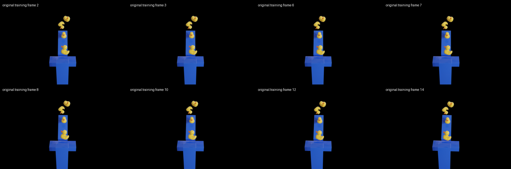
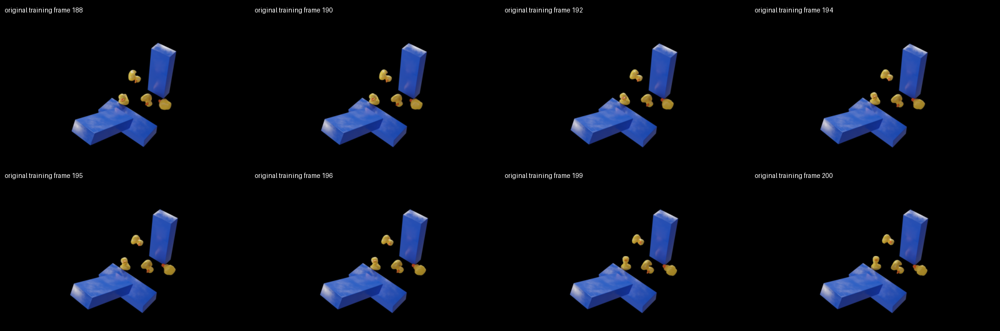
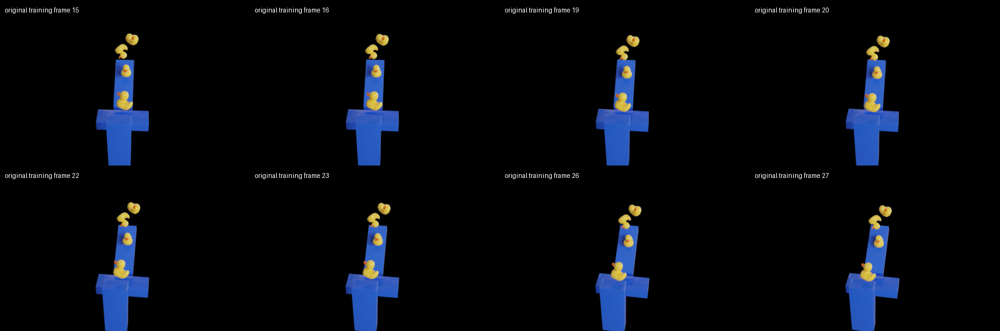
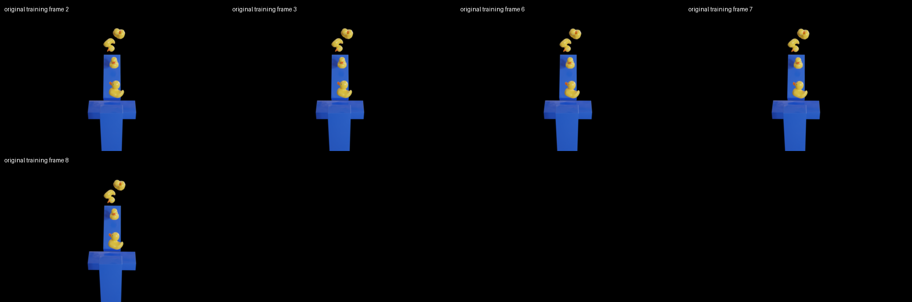
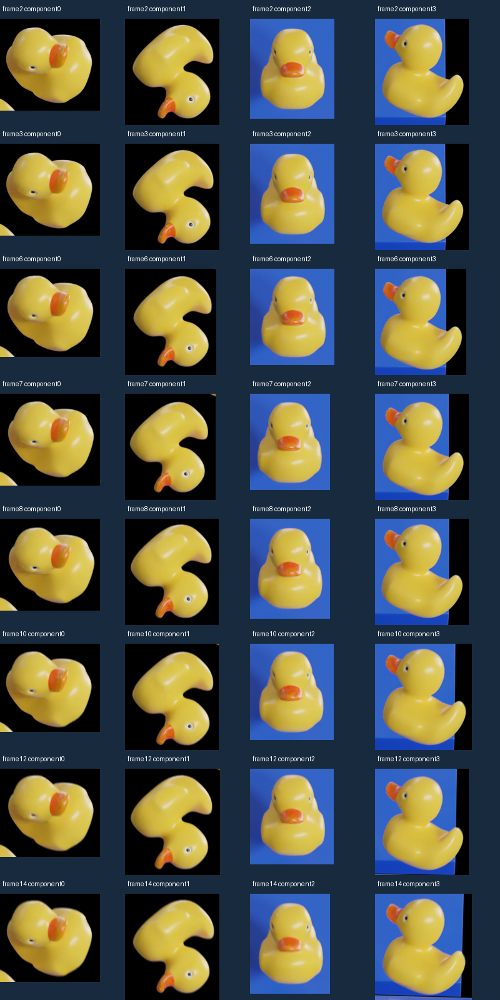

Selection uses silhouettes, raw FB flow and camera metadata, not C1 predictions. Separated silhouettes do not prove zero3D contact or independent geometry truth.
AssessmentOriginal train frames [2, 3, 6, 7, 8, 10, 12, 14]; camera rotation 2.283deg; minimum silhouette gap 7.07px at400x225.

Original train frames [188, 190, 192, 194, 195, 196, 199, 200]; camera rotation 2.560deg; minimum silhouette gap 12.17px at400x225.

Original train frames [15, 16, 19, 20, 22, 23, 26, 27]; camera rotation 6.122deg; minimum silhouette gap 7.07px at400x225.

Original train frames [2, 3, 6, 7, 8]; camera rotation 0.665deg; minimum silhouette gap 7.81px at400x225.

